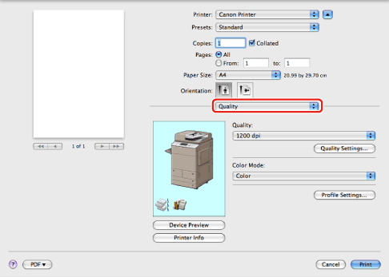
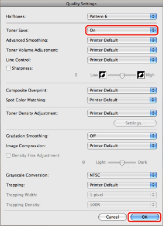

You can print a document in toner save mode. This mode is useful for proofreading.
1.
From the [File] menu of the application software, select [Print].
The [Print] dialog box is displayed.
2.
Select the [Quality] preferences pane.

The [Quality] preferences pane is displayed.
3.
Click [Quality Settings].

The [Quality Settings] dialog box is displayed.
4.
Select [On] from [Toner Save] → click [OK].

|
NOTE
|
|
For information on the other items in the [Quality Settings] dialog box, see "Specifying the Print Quality."
|
5.
Click [Print] in the [Print] dialog box.